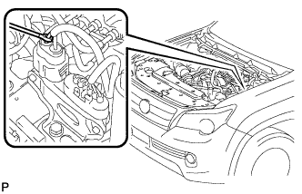

AIR PUMP > ON-VEHICLE INSPECTION |
| 1. INSPECT AIR PUMP ASSEMBLY |
Start the engine and warm it up.
Turn the engine switch off.
|  |
Connect the 400 A probe of an ammeter to the positive (+) wire of the air pump.
Connect the intelligent tester to the DLC3.
Turn the engine switch on (IG) and turn the tester on.
Enter the following menus: Powertrain / Engine and ECT / Utility / Air Injection Check / Manual Mode / AIR PUMP: ON, ASV1: OPEN, ASV2: OPEN.
Measure the current while the air pump is operating.
| Condition | Specified Condition |
| 20°C (68°F) | 10 to 40 A |
Turn the engine switch off.